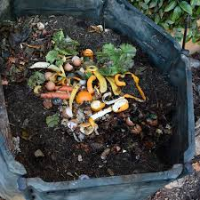

Informasi dan Manfaat Sampah Organik
Sampah organik dapat digunakan untuk membuat pupuk kompos yang bermanfaat bagi pertanian.
| Jenis Sampah | Manfaat |
|---|---|
| Sisa Sayuran | Pupuk Kompos |
| Kulit Buah | Penyubur Tanah |
| Daun Kering | Penyimpan Air |
Website ini memberikan informasi mengenai pemanfaatan sampah organik untuk mendukung bidang pertanian yang berkelanjutan.
Pemanfaatan sampah organik di bidang pertanian berperan penting dalam meningkatkan keberlanjutan dan kesuburan tanah. Sampah organik, seperti sisa makanan, dedaunan, dan kotoran hewan, dapat diolah menjadi kompos melalui proses dekomposisi alami. Kompos ini berfungsi sebagai pupuk organik yang kaya akan unsur hara seperti nitrogen, fosfor, dan kalium, yang dibutuhkan tanaman.
Selain itu, sampah organik juga dapat dimanfaatkan untuk membuat pupuk cair (contoh: lindi kompos) dan biogas. Pupuk cair berguna untuk memperbaiki kesuburan tanah dan mendukung pertumbuhan tanaman. Di sisi lain, biogas dari sampah organik berfungsi sebagai sumber energi alternatif di pedesaan. Dengan memanfaatkan sampah organik, pertanian dapat mengurangi ketergantungan pada pupuk kimia, mengurangi limbah, serta menjaga kesehatan lingkungan.